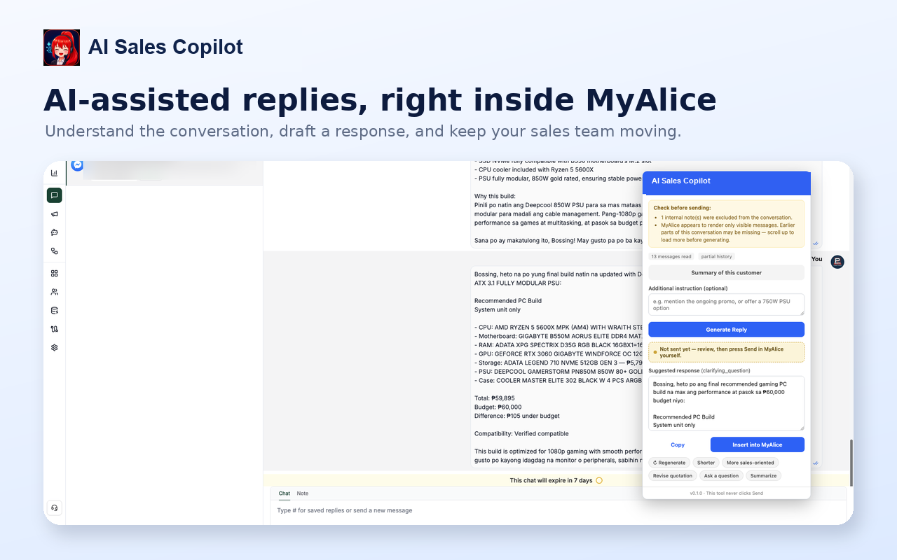
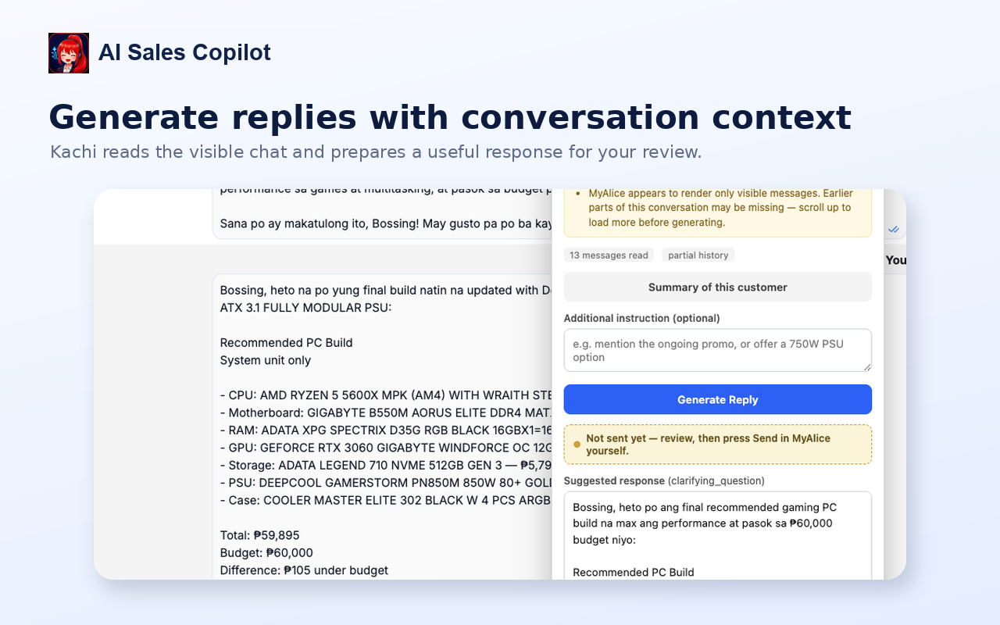
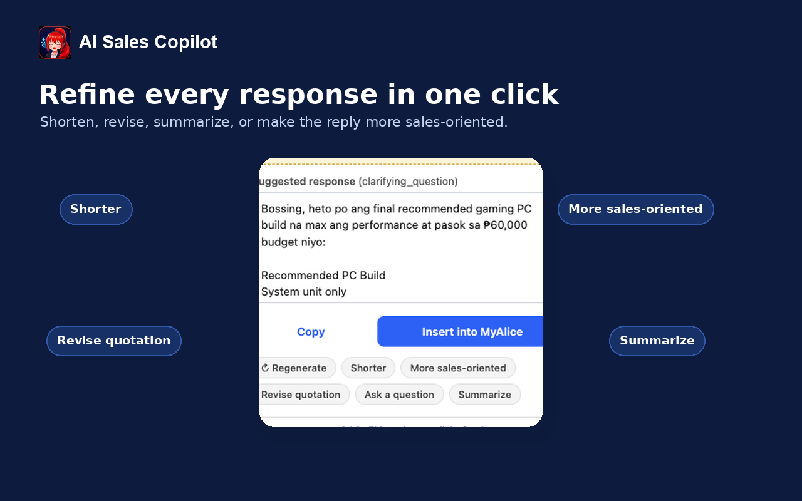
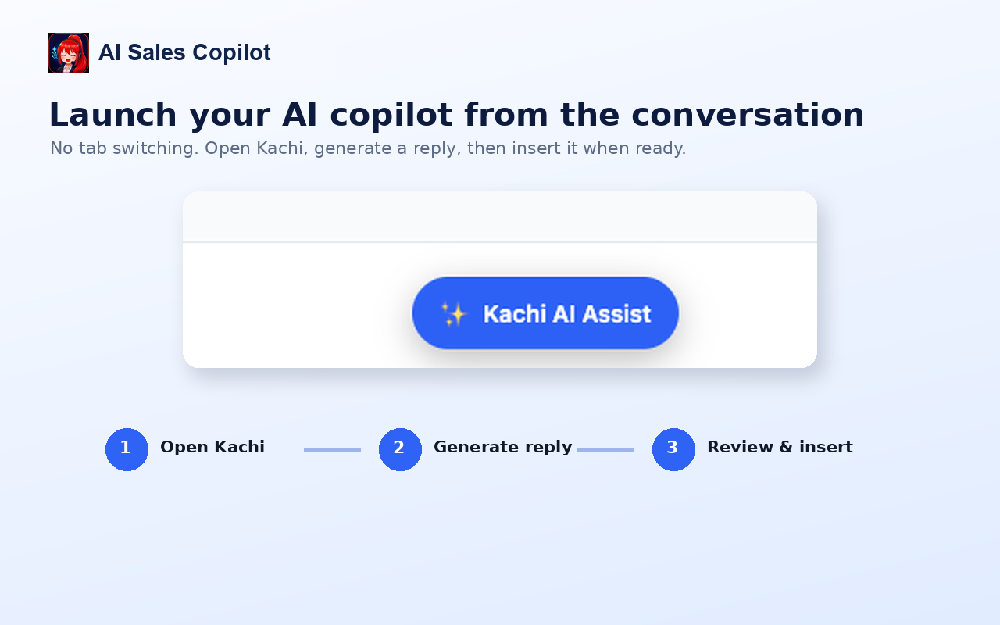
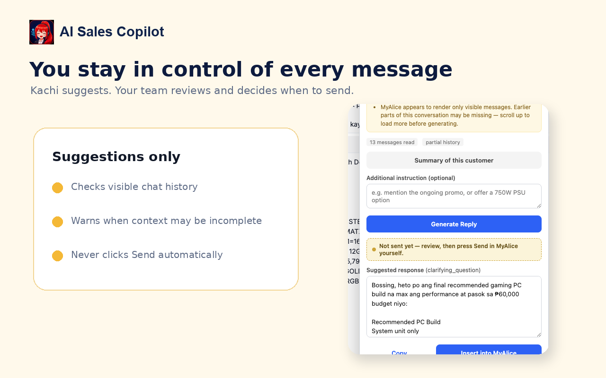

Conversation overload
Important requirements could be buried inside a long back-and-forth conversation.
Confidential client case study
A specialty retailer needed a faster way to understand long customer conversations, prepare product recommendations, and respond consistently. I built a browser-based assistant inside the team's existing inbox that creates review-ready replies and quotations while keeping every customer message under human control.
Overview
The copilot reads the conversation already open on screen, prepares a useful response or quotation, and places it into the reply box for the employee to review. It never sends automatically.
The business problem
Employees had to reread long threads, remember what the customer already said, assemble a suitable product recommendation, check the quotation, and write a clear response while other conversations continued to arrive.
Important requirements could be buried inside a long back-and-forth conversation.
Employees repeatedly drafted similar explanations, recommendations, and follow-up questions.
Product names, prices, compatibility, and totals needed verified business data—not AI guesses.
Reply quality and clarity could vary depending on workload and employee experience.
The inbox could load only part of a conversation, creating a risk of assuming details agreed earlier.
A wrong response must never reach a customer without an employee reviewing it first.
Challenges
Solution
I built a browser extension that reads the customer conversation already visible to the employee, identifies the recent context, and sends a structured request to a private workflow backend.
The backend retrieves verified product information, applies deterministic quotation and compatibility rules, then uses AI only to turn those facts into a concise, natural response. If verified information is missing, the system asks a question instead of inventing an answer.
Employees can generate, shorten, revise, summarize, or make a response more sales-oriented. The result can be inserted into the inbox composer, but the assistant never clicks Send. Human review is a permanent safety boundary.
System architecture
The workflow separates customer context, business rules, AI writing, and final approval so the model cannot control prices or customer-facing sends.
Working proof
Technologies
Gallery
These sanitized screens show the employee workflow without disclosing the client, customer identities, private URLs, or internal credentials.

The employee opens the copilot without switching tabs or manually copying the full conversation into another tool.

The assistant reads the visible thread, identifies the customer's requirements, and prepares a response for employee review.

Employees can shorten, revise, summarize, ask a question, or adjust the sales tone without rewriting the response from scratch.

Open the assistant, generate a useful reply, then review and insert it into the conversation composer.

The interface makes the safety boundary explicit: the assistant suggests and inserts text, while the employee decides what reaches the customer.
Why this matters
This system removes repeated reading, quotation assembly, and response drafting while preserving the employee's responsibility for accuracy, tone, and the final customer message.
Book a free discovery call and we will identify where a human-reviewed assistant can reduce repetitive sales work.
Book My Free Discovery Call